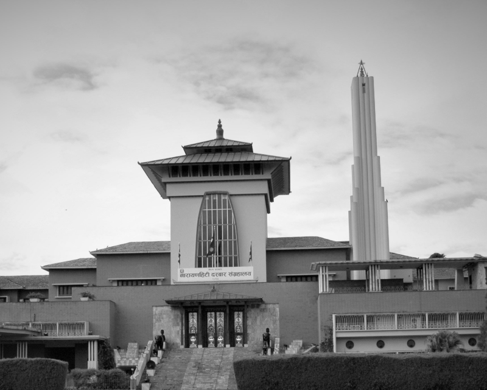
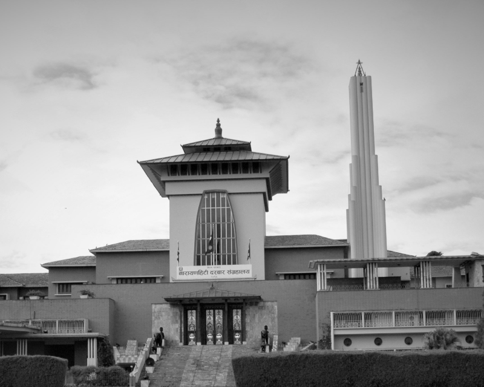
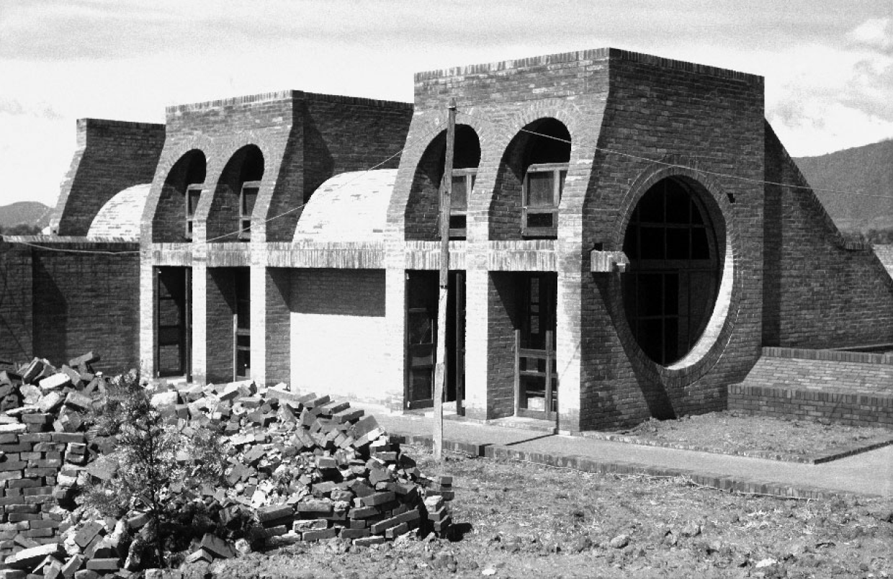
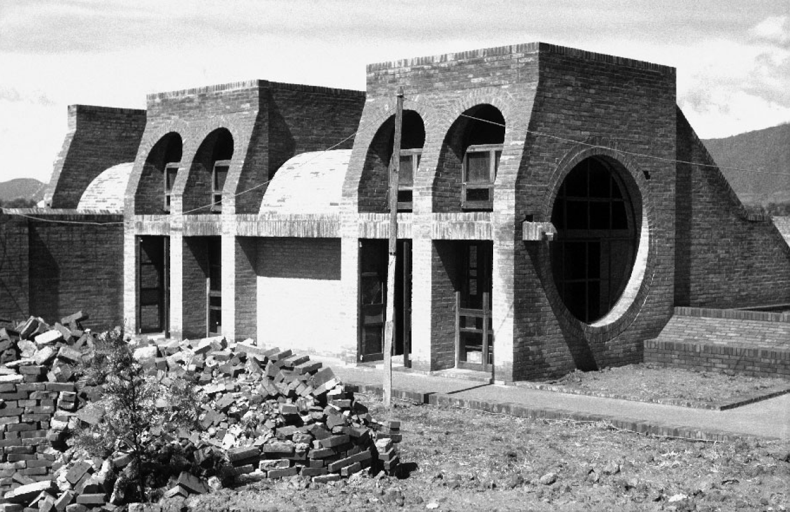

The program titled "The Early Modern Architecture of Kathmandu" offers a comprehensive exploration of Kathmandu's architectural landscape during the transformative early modern period, a time marked by significant socio-political shifts and cultural exchanges.
Delving beyond mere structures, this program meticulously examines the architectural evolution of Kathmandu, aiming to unravel the intricate layers of cultural influences and historical contexts that shaped its built environment during this pivotal era.
Through an interdisciplinary approach encompassing historical research, architectural analysis, and cultural studies, the program seeks to provide a nuanced understanding of how architectural styles in Kathmandu evolved and diversified during the early modern period.
By scrutinizing architectural features, construction techniques, and spatial arrangements, the program uncovers the fusion of traditional Newar architecture with external influences, including elements from the Mughal Empire, European colonialism, and regional trade routes.
Furthermore, the program showcases iconic architectural landmarks such as palaces, temples, and public buildings, illuminating their significance as symbols of power, religious devotion, and civic pride in early modern Kathmandu.
Beyond mere documentation, the program advocates for the preservation and conservation of Kathmandu's early modern architecture as a vital component of the city's cultural heritage. It underscores the importance of proactive measures to safeguard these architectural treasures from threats such as urbanization, neglect, and natural disasters.
Through community engagement initiatives, educational outreach, and collaborative partnerships with local authorities and heritage organizations, the program seeks to raise awareness about the historical and cultural significance of Kathmandu's architectural heritage and mobilize support for its preservation and sustainable management.
Ultimately, the program aspires to foster a deeper appreciation for Kathmandu's rich architectural legacy among residents, visitors, scholars, and policymakers alike, ensuring that future generations inherit a vibrant and culturally enriched urban environment that reflects the city's storied past and promising future.
Documentation of Early Modern Architecture in Kathmandu
26th November 2023
The Documentation of Early Modern Architecture in Kathmandu program is a comprehensive initiative aimed at shedding light on the architectural heritage of Kathmandu during the transformative early modern period. Held at Martins Chautari Seminar Hall in Thapathali, this program brings together three distinguished architects: Biresh Shah, Jharna Joshi, and Rahul Muni Bajracharya, to share their insights and expertise.
The program serves as a platform for these renowned architects to delve into the intricate details of Kathmandu's architectural landscape during the early modern era. Through a series of engaging talks and discussions, participants gain valuable insights into the evolution of architectural styles, influences, and innovations that shaped the city's built environment.
One of the key highlights of the program is the emphasis on research conducted by the organizing NGO. Through meticulous research efforts, the NGO has curated a wealth of information on modern architectures in Nepal, drawing from the works of both Nepali architects and architects from abroad. This research forms the backbone of the program, providing attendees with a comprehensive understanding of the diverse architectural influences and contributions that have shaped Kathmandu's urban fabric.
Moreover, the program showcases a collection of meticulously derived drawings, offering a visual narrative of Kathmandu's architectural evolution during the early modern period. These drawings serve as valuable artifacts, capturing the essence and intricacies of various architectural styles, structures, and landmarks that define Kathmandu's rich cultural heritage.
Overall, the Documentation of Early Modern Architecture in Kathmandu program stands as a testament to the importance of preserving and celebrating the architectural legacy of Kathmandu. By bringing together architects, researchers, and enthusiasts, the program fosters a deeper appreciation for the city's architectural heritage and stimulates dialogue on the importance of conservation and sustainable development in safeguarding Kathmandu's historic built environment for future generations.
Modern Architecture in India
27th November 2021
"Modern Architecture in India: A Critical Viewpoint" offers a captivating exploration into the evolution and critique of modern architectural practices in India and South Asia. Anchored by an online lecture by esteemed architect Professor Miki Desai, the program unfolds as a journey through the rich tapestry of architectural narratives that define the region. Professor Desai's profound insights and scholarly reflections serve as guiding lights, illuminating the complexities and significance of contemporary architectural endeavors.
With a keen focus on India, the program delves into the diverse styles, influences, and challenges that shape modern architectural practices. Through vivid case studies and compelling examples, participants gain a deeper understanding of the architectural innovations and cultural dynamics that define the Indian architectural landscape. Moreover, the program extends its purview to encompass the broader South Asian context, showcasing architectural gems from neighboring countries and fostering cross-cultural dialogue and exchange.
At its core, the program fosters critical inquiry and debate, challenging participants to question established norms and reimagine the future of architecture in India and beyond. Professor Desai's thought-provoking discourse sparks dynamic conversations, encouraging participants to explore alternative perspectives and envision innovative approaches to architectural design and practice.
The interactive online format provides a dynamic platform for engagement and collaboration, transcending geographical barriers to unite architects, scholars, students, and enthusiasts in a shared exploration of architectural narratives. Through live discussions and interactive sessions, participants actively contribute to shaping the discourse and advancing critical dialogue within the architectural community.
As the program unfolds, participants emerge with enriched perspectives and renewed inspiration, galvanized by the depth of insights shared and the diversity of viewpoints encountered. The program's impact extends far beyond its duration, igniting continued exploration, dialogue, and innovation within the realm of modern architecture in India and South Asia.
Ultimately, "Modern Architecture in India: A Critical Viewpoint" serves as a catalyst for fostering deeper appreciation, critical engagement, and collaborative action within the architectural community. It champions a vision where architectural innovation harmonizes with cultural heritage, societal aspirations, and the evolving needs of contemporary society, shaping a future where architecture becomes a catalyst for positive change and transformation.
Exploring Nepal's Urban Landscape
17th May 2021
"Exploring Nepal's Urban Landscape" invites participants on a captivating journey through the vibrant tapestry of Nepal's cities and towns. This immersive program delves into the intricate layers of Nepal's urban environment, offering insights into its historical, cultural, and architectural significance. Through a series of guided tours, interactive workshops, and insightful discussions, participants embark on an exploration of Nepal's urban fabric, unraveling its rich heritage and contemporary challenges.
Led by seasoned experts and local guides, the program offers a unique opportunity to discover Nepal's urban landscape from diverse perspectives. Participants delve into the bustling streets of Kathmandu, exploring its ancient alleyways, majestic temples, and bustling marketplaces. They uncover the hidden gems of Patan and Bhaktapur, immersing themselves in the timeless charm of Newari architecture and craftsmanship.
Beyond the Kathmandu Valley, the program ventures into Nepal's emerging urban centers, shedding light on the dynamic evolution of cities such as Pokhara, Biratnagar, and Dharan. Participants gain insights into the social, economic, and environmental dynamics shaping these urban landscapes, from rapid urbanization and infrastructure development to cultural preservation and community resilience.
The program also delves into contemporary urban challenges and innovative solutions, exploring themes such as sustainable urban planning, heritage conservation, and community-led development. Through interactive workshops and engaging discussions, participants collaborate with local stakeholders to address pressing issues and envision a more inclusive and sustainable future for Nepal's cities.
In addition to its educational components, the program offers ample opportunities for cultural immersion and experiential learning. Participants engage with local communities, artisans, and entrepreneurs, gaining firsthand insights into the daily life and cultural traditions of Nepal's urban dwellers. From traditional craft demonstrations to culinary experiences and cultural performances, each encounter deepens participants' appreciation for Nepal's rich cultural heritage.
As the program unfolds, participants emerge with a newfound appreciation for Nepal's urban diversity and complexity. Inspired by the stories and experiences shared, they return home with a deeper understanding of Nepal's urban landscape and a renewed commitment to promoting sustainable development and cultural preservation in their own communities. "Exploring Nepal's Urban Landscape" is more than a program—it's a transformative journey that fosters connections, fosters understanding, and empowers change-makers to shape a more resilient and inclusive urban future.
 

 
